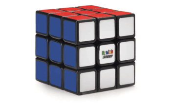

You've almost certainly heard of the famous "Rubik's Cube." Maybe You've even seen versions that looked more or less complex with different numbers of layers. Did you know that these are actually only a small subset of a huge family of related puzzles? As a category, these puzzles are called "twisty" puzzles and they can vary based on a surprising number of factors. We'll start with a simple exploration of one such factor: the shape used as the basis for the puzzle's mechanism.
Most who are interested in geometry know that there are 5 "platonic solids." These are special shapes that have specific regularity and symmetry that no other shapes have, which makes them a good basis for twisty puzzle mechanisms. Many twisty puzzles have been made using every platonic solid out there and the properties of each make for fundamentally different solves from one to another. There's some contention over what should be considered a fundamental puzzle in each shape, but here's a table of one for each shape:
| Platonic Solid | | Puzzle |
|---|---|
| Tetrahedron | Pyraminx |
| Cube | Rubik's Cube |
| Octahedron | Face Turning Octahedron (FTO) |
| Dodecahedron | Megaminx |
| Icosahedron | Icosaix (Radiolarian 2) |
Here are just some other variables that can be explored to find new and complex twisty puzzles:
Thanks for reading! I hope you learned a bit about this surprisingly deep niche.